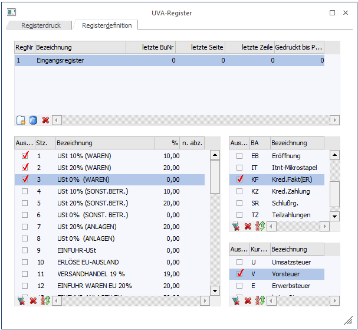
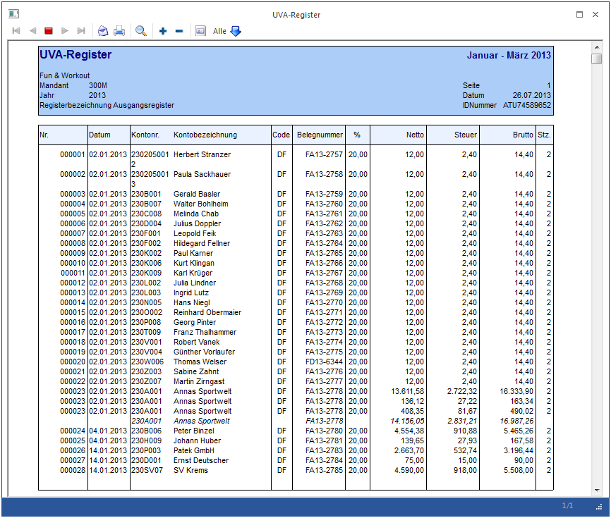
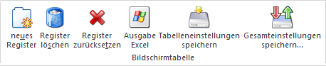
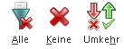
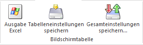

Um den Druck des UVA-Registers zu ermöglichen, müssen zunächst die notwendigen Register definiert werden. Dies erfolgt im Menüpunkt
1 Auswertungen
1 Steuermeldungen
1 UVA-Register
1 Register "Registerdefinition"

Grundsätzlich kann der Anwender völlig frei Buchungscodes, Steuercodes und Steuerzeilen zu Registern zusammenfassen. Die Datenquelle ist das Journal.
Beispiel
Beispiele für Register sind das Eingangsregister, das Ausgangsregister, das Barverkaufsregister, das Intra-Eingangsregister, das Intra-Ausgangsregister, usw.
Mit dem Button "Neu" wird in der linken Tabelle eine neue Zeile freigegeben und somit ein neues Register angelegt.
Ø RegNr
Vom System wird automatisch eine Registernummer vergeben.
Ø Bezeichnung
Eintragung der gewünschten Registerbezeichnung.
Ø Letzte BuNr
Mit Durchführung des Originaldruckes wird die letzte Journalnummer eingetragen.
Ø Letzte Seite
Mit Durchführung des Originaldruckes wird die letzte gedruckte Seite des UVA-Registers eingetragen. (Dieses Feld ist editierbar, um im Falle eines abweichenden Wirtschaftsjahres den fortlaufenden Seitendruck des IVA-Registers zu gewährleisten.)
Ø Letzte Zeile
Mit Durchführung des Originaldruckes wird die letzte gedruckte Zeile eingetragen.
Ø Gedruckt bis Per
Mit Durchführung des Originaldruckes wird die letzte gedruckte Buchungsperiode eingetragen.
Nach der Vergabe einer Bezeichnung können folgende Kriterien für ein Register definiert werden:
Ø Steuerzeilen
Durch Setzen des Häkchens wird bestimmt, dass Journalzeilen, die diese Steuerzeilen enthalten beim Ausdruck des UVA-Registers berücksichtigt werden sollen.
Ø Buchungsart
Durch Setzen des Häkchens wird bestimmt, dass Journalzeilen, die diese Buchungsarten enthalten, also z.B. nur die DF oder nur die KF, beim Ausdruck des UVA-Registers berücksichtigt werden sollen.
Ø Steuercode
Durch Setzen des Häkchens wird bestimmt, dass Journalzeilen, die diesen Steuercode enthalten berücksichtigt werden soll (Umsatzsteuer, Vorsteuer, Erwerbssteuer, keine Steuer).
Beispiel 1
Eingangsregister umfasst unter anderem alle Zeilen die mit VST-Code 2 (VSt 20 % (Waren)) gebucht wurden, bei denen der Steuercode V angesprochen wurde und bei denen der Buchungsschlüssel KF war.

Beispiel 2
Ausgangsregister umfasst unter anderem alle Zeilen die mit UST-Code 2 (UST 20% (Waren)) gebucht wurden, bei denen der Steuercode U angesprochen wurden und bei denen der Buchungsschlüssel DF war.

Mit dem Button "OK" bzw. mit F5 kann dieses Register abgespeichert werden und steht ab sofort beim Druck der UVA zur Auswahl.
Buttons
Im Bereich "Registerdefinition" stehen nur zwei Buttons zur Verfügung:
Ø Ende
Der Programmteil wird verlassen, ohne dass eventuelle Veränderungen abgespeichert werden.
Ø Register Speichern
Die Einstellungen, die vorgenommen wurden, werden nach Anklicken des Speicher-Buttons abgespeichert.
Im Bereich Registerdefinition gibt es für die obere Tabelle noch zusätzliche Buttons zur Auswahl:

Ø Neu
Es wird eine neue Zeile angelegt und somit kann ein neues Register definiert werden.
Ø Löschen
Ein bereits abgespeichertes Register kann hiermit wieder gelöscht werden.
Ø Rücksetzen
Mit dem Rücksetzen-Button werden Originalausdrucke eines Registers verworfen und können nochmals durchgeführt werden. Sie erhalten noch eine Warnmeldung ob Sie das wirklich durchführen wollen.
Im Bereich Registerdefinition gibt es für die unteren Tabellen noch zusätzliche Buttons zur Auswahl:

Ø Alle
In der aktiven Tabelle wird bei allen Selektionskriterien das Häkchen gesetzt.
Ø Keine
In der aktiven Tabelle wird bei allen Selektionskriterien das Häkchen entfernt, bei denen es bereits gesetzt wurde.
Ø Umkehr
In der aktiven Tabelle wird bei allen Selektionskriterien das Häkchen gesetzt, wenn es noch nicht vorhanden war bzw. entfernt falls es schon gesetzt wurde.
Diese Buttons sind im Register Registerdefinition bei allen Tabellen zusätzlich vorhanden:

Ø Ausgabe Excel
Durch Anwahl des Buttons "Ausgabe Excel" wird der Inhalt der Tabelle an Microsoft Excel übergeben.
Ø Tabelleneinstellungen speichern
Die Spalten einer Tabelle können grundsätzlich an beliebige Positionen verschoben, bzw. in der Breite entsprechend angepasst werden. Durch Anwahl des Buttons "Tabelleneinstellungen speichern" werden die Einstellungen benutzerspezifisch gespeichert und bei dem nächsten Aufruf des Programmpunktes wieder vorgeschlagen.
Ø Gesamteinstellungen speichern
Im Gegensatz zu "Tabelleneinstellungen speichern" können mit "Gesamteinstellungen speichern" mehrere Tabellenaufbauten gespeichert und nach Wunsch geladen werden. Zusätzlich werden Sonderfunktionen der Tabelle (z.B. "Spalte gruppieren") ebenfalls bei der Speicherung bedacht.